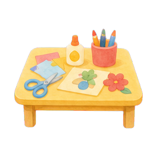
充実した正課
体を動かす、英語に親しむ、制作するなど、年齢に合わせた活動を日々の保育に組み込みます。
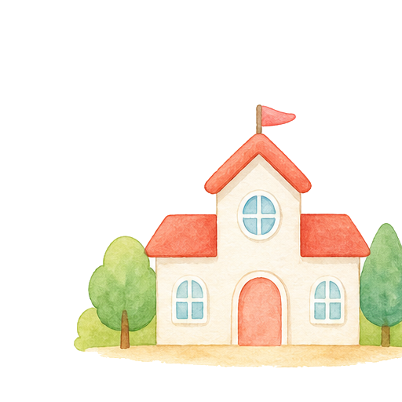
学校法人 愛児学園愛児幼稚園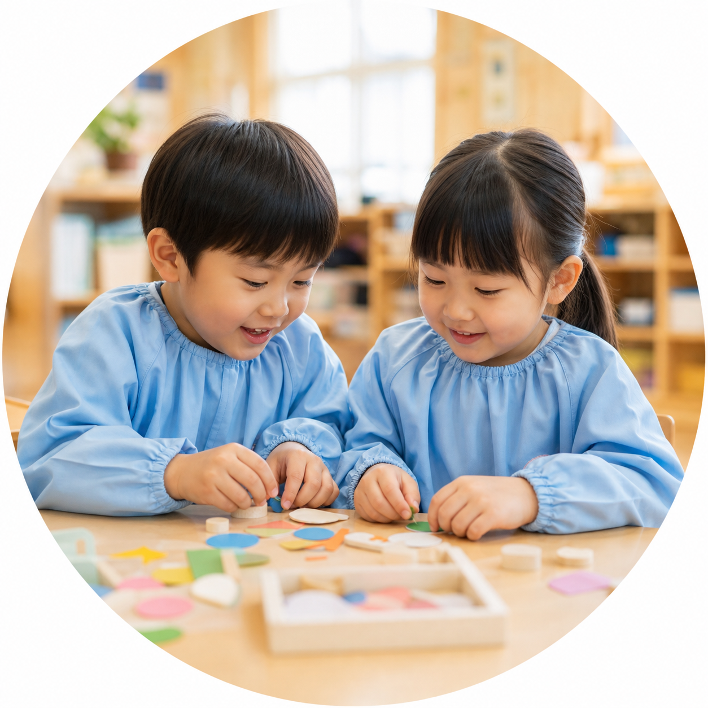
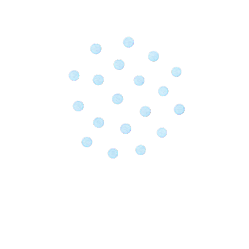
正課、課外、遊び場を分けて見せることで、保護者が園生活を具体的に想像できる構成です。

体を動かす、英語に親しむ、制作するなど、年齢に合わせた活動を日々の保育に組み込みます。
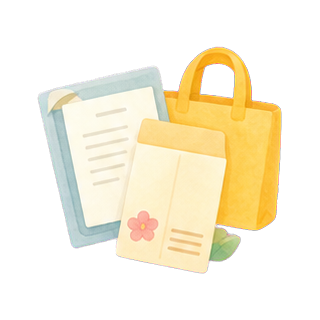
預かり保育や降園後の時間ともつながる、通いやすい課外活動の導線を用意します。
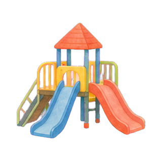
園庭や保育室での自由な遊びを通して、想像力、体力、友だちとの関わりを育てます。
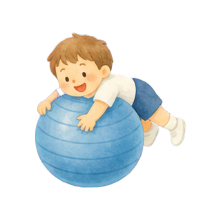
走る、跳ぶ、登るなど、基礎的な運動を楽しく経験します。
歌やゲームを通して、言葉や異文化に自然に親しみます。
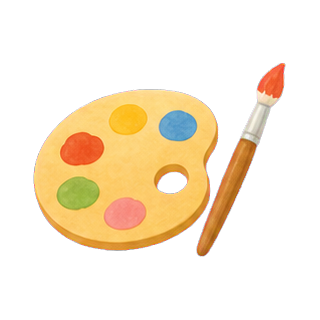
素材や道具に触れながら、作る楽しさと表現する力を伸ばします。
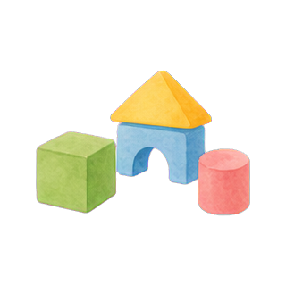
遊びや教材を通して、小学校につながる学びの芽を育てます。
ワイヤー段階では活動名・対象年齢・実施曜日を入れられるカード型にしています。
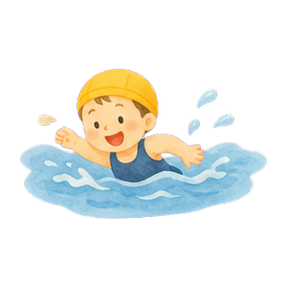
水に親しみ、できることが増える喜びを感じる活動。
歌や楽器、和太鼓などを通して、みんなで合わせる楽しさを経験。
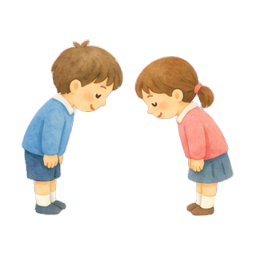
あいさつや姿勢、相手を思うふるまいを身につける活動。
卒園制作や季節の制作など、思い出に残る表現活動。
毎日の給食は、旬の食材や行事食を取り入れながら、楽しく食べる経験を大切にします。 アレルギー対応などの相談導線もここに配置します。
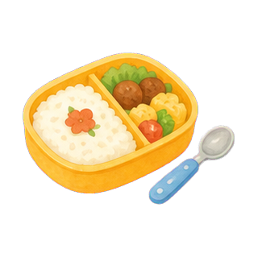